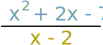
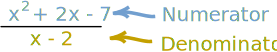
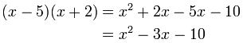
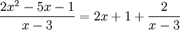
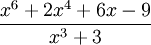
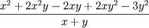

Polynomials - Long Division
A polynomial looks like this:
 |
| example of a polynomial
this one has 3 terms |
Dividing

Polynomials can sometimes be divided using the simple methods shown on Dividing Polynomials.
But sometimes it is better to use "Long Division" (a method similar to Long Division for Numbers)
Numerator and Denominator
We can give each polynomial a name:

- the top polynomial is the numerator
- the bottom polynomial is the denominator
If you have trouble remembering, think denominator is down-ominator.
The Method
Write it down neatly:

- the denominator goes first,
- then a ")",
- then the numerator with a line above
Both polynomials should have the "higher order" terms first (those with the largest exponents, like the "2" in x2).
Then:
 |
|
| Repeat, using the new polynomial |
It is easier to show with an example!
Example:

Write it down neatly like below, then solve it step-by-step (press play):
Check the answer:
Multiply the answer by the bottom polynomial, we should get the top polynomial:
 
Remainders
The previous example worked perfectly, but that is not always so! Try this one:
After dividing we were left with "2", this is the "remainder".
The remainder is what is left over after dividing.
But we still have an answer: put the remainder divided by the bottom polynomial as part of the answer, like this:

"Missing" Terms
There can be "missing terms" (example: there may be an x3, but no x2). In that case either leave gaps, or include the missing terms with a coefficient of zero.
Example:

Write it down with "0" coefficients for the missing terms, then solve it normally (press play):
See how we needed a space for "3x3" ?
More than One Variable
So far we have been dividing polynomials with only one variable (x), but we can handle polynomials with two or more variables (such as x and y) using the same method.
Example:
